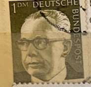
| SOURCE | TITLE| IMAGE MATCH | click to source page |
| eBay | West Germany - 1970 - Gustav Heinemann - 10Pfg - Used - #01 | eBay | 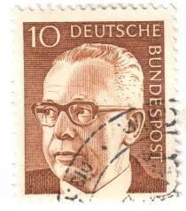 |
| eBay | BERLIN 9N286A - President Gustav Heinemann "1972 Olive" (pc17762) | eBay | 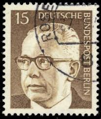 |
| eBay | GERMANY 1038A - President Gustav Heinemann "1973 Olive Grey" (pc14377) | eBay |  |
| Shutterstock | Switzerland Circa 1978 Stamp Printed By Stock Photo 124495186 | Shutterstock | 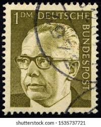 |
| vividagallery.com | Gustav Heinemann Portrait German President Federal Republic Demo #3 Art Print by Vivida Gallery - Vivida Gallery |  |
| Bob Shop | Germany & Colonies - BERLIN 1970 Federal President Gustav Heinemann UNH CV R10 SG B353 was listed for 0.00 on 1 Jul at 11:02 by trevorfrsr in Durban (ID:645510319) | 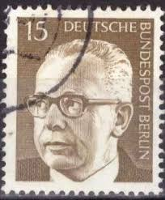 |
| Alamy | A stamp printed in the Germany, shows Friedrich Silcher (1789-1860), Composer, and Lorelai Score, circa 1989 Stock Photo - Alamy | 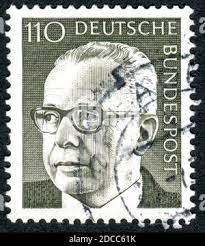 |
| Alamy | Dr gustav heinemann hi-res stock photography and images - Alamy |  |
| Dreamstime.com | Gustav Heinemann, President of the Federal Republic of Germany Editorial Stock Image - Image of philatelic, philately: 177916989 |  |
| Shutterstock | 8 Kurt Georg Kiesinger Royalty-Free Images, Stock Photos & Pictures | Shutterstock |  |
| Dreamstime.com | Gustav Heinemann, President of the Federal Republic of Germany Editorial Stock Image - Image of portrait, philatelic: 177917149 | 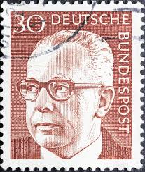 |
| Shutterstock | 19+ Thousand German Post Stamp Royalty-Free Images, Stock Photos & Pictures | Shutterstock | 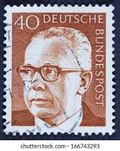 |
| Alamy | Gustav heinemann president west germany hi-res stock photography and images - Alamy |  |
| Alamy | Gustav Heinemann, President of West Germany (1969-1974), postage stamp, Germany Stock Photo - Alamy | 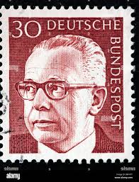 |
| iStock | Former German President On An Old Stamp Stock Photo - Download Image Now - 1971, Black Background, Black Color - iStock |  |
| Shutterstock | 2+ Thousand Deutsche Bundespost Royalty-Free Images, Stock Photos & Pictures | Shutterstock | 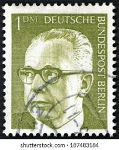 |
| iStock | Former German President On An Old Stamp Stock Photo - Download Image Now - Gustav Heinemann, 1971, Adults Only - iStock |  |
| Shutterstock | Mark walter, результатов — 275: изображения, стоковые фотографии, картинки без лицензионных платежей | Shutterstock |  |
| iStock | Gustav Heinemann Stock Photo - Download Image Now - Adult, Adults Only, Black Background - iStock | 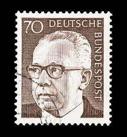 |
| Alamy | Gustav heinemann president west germany hi-res stock photography and images - Alamy | 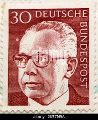 |
| Todocolección | sello grossdeutsches reich albertus universitat - Acquista Francobolli antichi di Germania su todocoleccion | 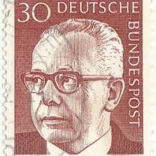 |
| Dreamstime.com | H Envelope Stock Illustrations – 68 H Envelope Stock Illustrations, Vectors & Clipart - Dreamstime | 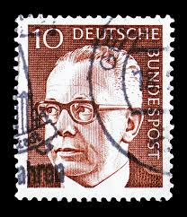 |
| Shutterstock | 40 Stamp: Over 2,522 Royalty-Free Licensable Stock Photos | Shutterstock |  |
| Alamy | 5 pfennig stamp hi-res stock photography and images - Alamy | 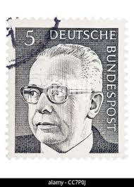 |
| Alamy | Influential political intellectual hi-res stock photography and images - Alamy | 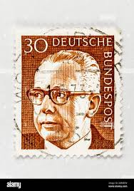 |
| Shutterstock | 2+ Thousand Russia Circa 1970 Royalty-Free Images, Stock Photos & Pictures | Shutterstock | 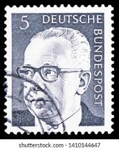 |
| Shutterstock | 6+ Thousand Glasses Politician Royalty-Free Images, Stock Photos & Pictures | Shutterstock | 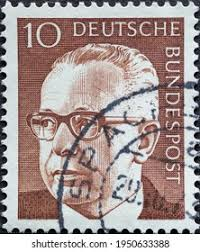 |
| Alamy | Federal President Gustav Heinemann in conversation with his wife Hilda during a visit to the World Peace Church in Hiroshima on 10.05.1970. Left Pastor Mattias S. Nakayama and next to him Monsignor |  |
| Alamy | Postman germany hi-res stock photography and images - Alamy | 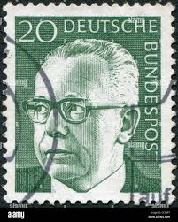 |
| Shutterstock | postal_history": Over 107,664 Royalty-Free Licensable Stock Photos | Shutterstock | 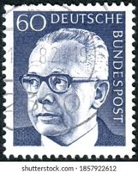 |
| Dreamstime.com | Gustav Heinemann，德意志联邦共和国总统编辑类库存照片- 图片包括有男人, 邮费: 178473333 | 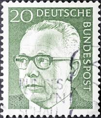 |
| Dreamstime.com | Presidente Federal Dr.. Gustav Heinemann Y Wallpavillon Del Zwinger Dresden Sachsen Foto editorial - Imagen de colección, federal: 388843176 | 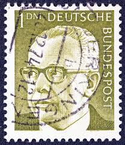 |
| eBay | BERLIN 9N284 - President Gustav Heinemann "1971 Dark Grey" (pc17765) | eBay | 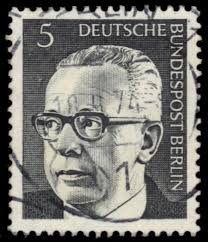 |
| eBay | West Germany - 1970 - Gustav Heinemann - 40Pfg - Used - #05 | eBay | 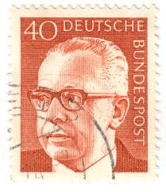 |
| eBay | GERMANY WEST DEUTSCHE BUNDESPOST 1970 GUSTAV HEINEMANN 20 Green - USED TKS205* | eBay | 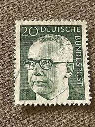 |
| eBay | GERMANY WEST DEUTSCHE BUNDESPOST 1970 GUSTAV HEINEMANN 10 BROWN - USED TKS272* | eBay | 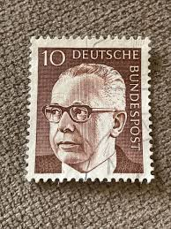 |
| eBay | GERMANY WEST DEUTSCHE BUNDESPOST 1970 GUSTAV HEINEMANN 50 BLUE - USED TKS206* | eBay | 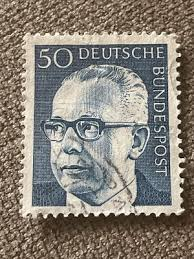 |
| eBay | Germany B 1972 Gustav Heinemann President Politician Politics People 7v set MNH | eBay | 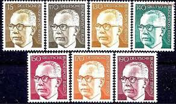 |
| eBay | Germany - 1970 - 30Pfg - Gustav Heinemann - #17929 | eBay | 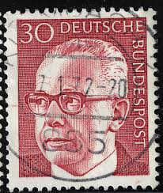 |
| Bob Shop | Germany & Colonies - BERLIN 1970 Federal President Gustav Heinemann UMM CV R30.80 SG B355 was listed for 3.00 on 25 Jun at 04:16 by trevorfrsr in Durban (ID:644208617) | 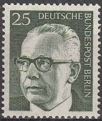 |
| eBay | GERMANY WEST DEUTSCHE BUNDESPOST 1970 GUSTAV HEINEMANN 30 BROWN RED - USED TKS91 | eBay | 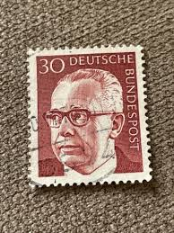 |
| eBay | West Germany - 1970 - Gustav Heinemann - 20Pfg - Used - TKS90* | eBay | 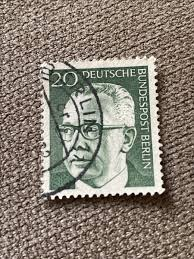 |
| eBay | Germany 1970-73 PRESIDENT GUSTAV HEINEMANN MNH SC 1028-44 | eBay | 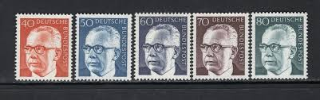 |
| eBay | GERMANY WEST DEUTSCHE BUNDESPOST 1970 GUSTAV HEINEMANN 50 BLUE - USED TKS224* | eBay | 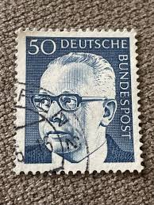 |
| eBay | Germany 1973 110pf PRESIDENT GUSTAV HEINEMANN MNH SC 1038A | eBay | 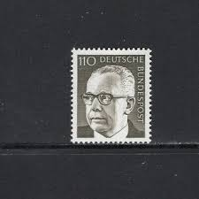 |
| eBay | GERMANY WEST DEUTSCHE BUNDESPOST 1970 GUSTAV HEINEMANN 30 BROWN RED USED TKS212* | eBay | 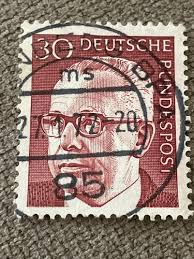 |
| eBay | 061 - Germany 1972 - Gustav Heinemann - FDC | eBay | 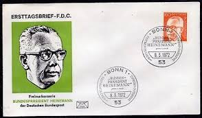 |
| eBay | Postal History Germany FDC #1029+1030 Gustav Heinemann 1970 | eBay | 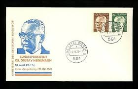 |